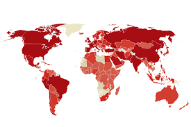
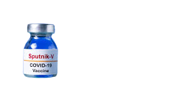

يُعتبر تتبع ودراسة الحالات المناعية والتعافي لدى الناجين من فيروس كورونا المستجد (COVID-19) أحد أهم المحاور البحثية لفهم الاستجابة المناعية طويلة الأمد للجسم البشري. تشير الدراسات الوبائية إلى أن الأغلبية الساحقة من المصابين يطورون مناعة مكتسبة، سيما أولئك الذين التزموا بتلقي اللقاحات الأساسية والجرعات التعزيزية في مواعيدها المحددة. تلعب العوامل الصحية العامة، والعمر، والوضع المناعي الأساسي دوراً محورياً في سرعة التعافي وتجاوز الأعراض الحادة أو ما يُعرف بمضاعفات "ما بعد كورونا طويل الأمد". ومن خلال منصتنا هذه، نسعى لتسليط الضوء على الإحصاءات الرسمية، وتجارب التعافي الواقعية، والخرائط التفاعلية التي توضح بؤر الانتشار، لرفع مستوى الوعي المجتمعي وتقديم رؤية تحليلية موثوقة تسهم في دعم جهود الوقاية والسلامة العامة.
---------------------------------------------------------------------------------------------------------------------------------------------------------------------------------------------------------

---------------------------------------------------------------------------------------------------------------------------------------------------------------------------------------------------------

يُعد لقاح "سبوتنيك V" (Sputnik V) المطور في روسيا واحداً من أبرز اللقاحات الناقلة الفيروسية (Viral Vector Vaccines) التي تم استخدامها عالمياً لمواجهة جائحة كوفيد-19. يعتمد اللقاح في آلية عمله على استخدام ناقل غداني بشري مضعف ليحفز جهاز المناعة على إنتاج أجسام مضادة خاصة ببروتين نتوء الفيروس، مما يمنح الجسم حماية عالية ضد الإصابة بالأعراض الشديدة ودخول المستشفيات. لقد أثبتت البيانات الإكلينيكية والمراجعات العلمية كفاءة عالية للقاح في الحد من معدلات الوفيات والانتشار السريع. ويأتي استعراضنا لهذا اللقاح ضمن خطتنا لتوثيق أهم الحلول الطبية والوقائية التي ساهمت في السيطرة على الأزمات الصحية العالمية، وتقديم معلومات دقيقة للمهتمين بالجانب الطبي والصحي عبر هذا الموقع